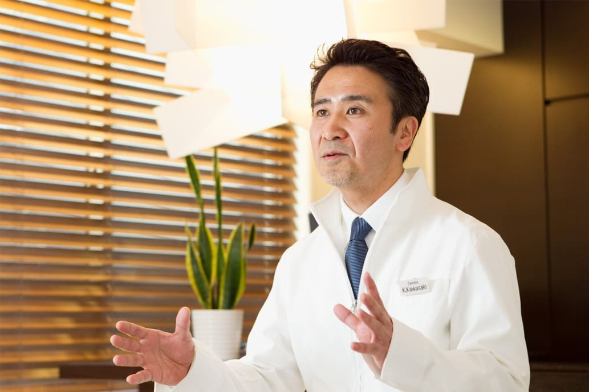

ドクター紹介
院長紹介
皆さん、こんにちは。かわさき歯科・矯正歯科 院長の川崎です。神奈川県大和市に開業して早くも30年が経ちました。
地域に根差した総合歯科クリニックとして、皆さんのお役に立てるよう日々努めています。当院の強みは、虫歯治療から歯周病治療、小児歯科、矯正歯科まで、総合的に1つのクリニックとして処置できることです。
虫歯治療、歯周病治療、小児歯科は、診療歴30年の趙副院長が主に担当します。
矯正歯科は矯正専門医の院長川崎が担当いたします。これからも信頼できるホームドクターを目指して頑張っていきたいと思います。どうぞよろしくお願いいたします。
院長 川崎 健一

経歴
- 1967年 東京都大田区に生まれる
- 1985年 大阪府立豊中高等学校卒業
- 1993年 東北大学歯学部卒業
- 1993年 歯科医師免許取得
- 1993年 鶴見大学付属病院矯正歯科入局
- 1998年 歯学博士（歯科矯正学）
- 1998年 Lingual Orthodontic Clinical Course（Dr.Takemoto）修了
- 1999年 日本矯正歯科学会認定医取得
- 1999年 かわさき歯科矯正 開設
- 2007年 表参道矯正歯科 開設
- 2013年 医療法人社団健心会 設立 理事長就任
資格
- ◆矯正歯科・審美歯科担当
- ◆東北大学歯学部卒
- ◆歯学博士（歯科矯正学）
- ◆日本矯正歯科学会認定医
- ◆インビザライン公式認定医
- （Lingual Orthodontist）
副院長紹介
こんにちは。副院長の趙栄来です。この度はかわさき歯科・矯正歯科のホームページをご利用いただき、誠にありがとうございます。
当院ではスタッフ一同、常に患者様とのコミュニケーションを心がけ、歯に関するお悩みやご要望を可能な限り反映させる治療を提供したいと考えております。虫歯、歯周病を基盤とし、ご自身の歯と治療した歯が長持ちするような予知性の高い歯科治療を実践することを目指しております。
まだ発展途上ではございますが、皆様からの信頼を得られますように、そして皆様の健康維持に少しでもご協力できますように、今後とも自己研鑽を積んで参りますので、宜しくお願い申し上げます。
副院長 趙栄来
経歴
- 1986年 松本歯科大学 入学
- 2008年 かわさき歯科・矯正歯科 副院長就任